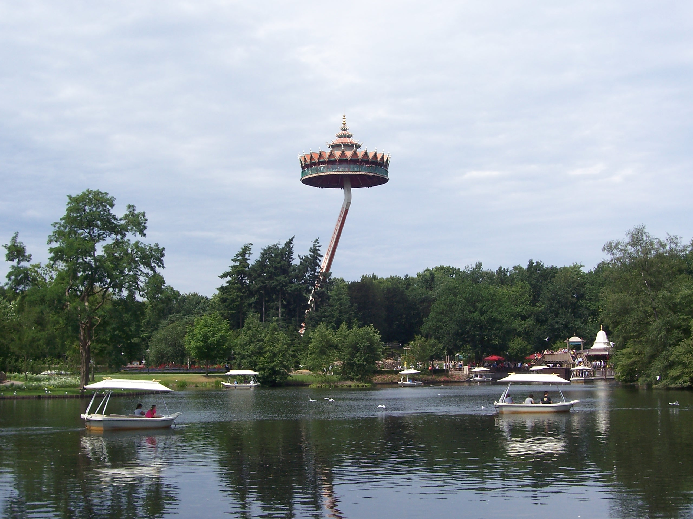
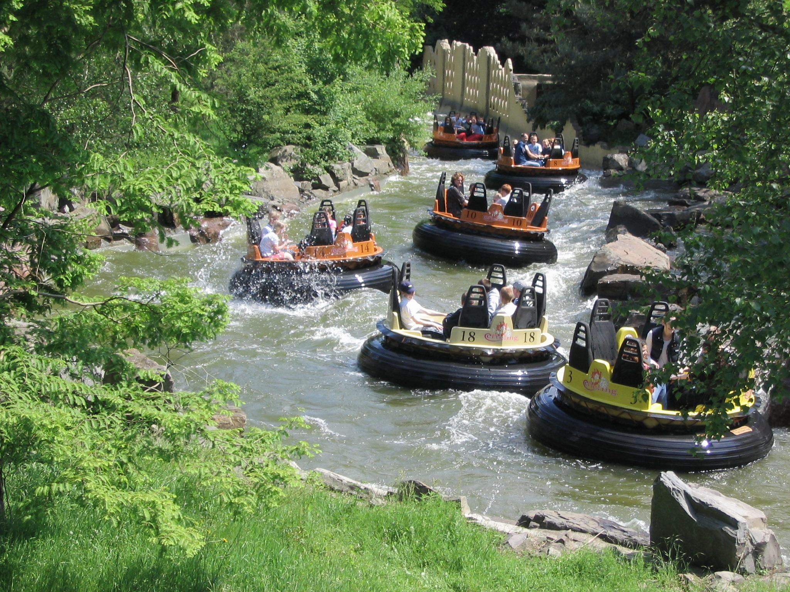
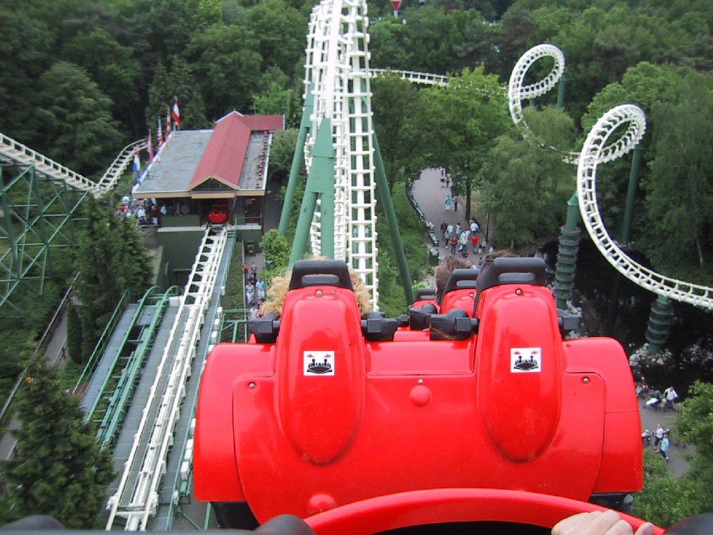

Gallerij



Parkmuziek
Een groot deel van de Bose-luidsprekers die in het park te vinden zijn werden aangelegd voor de allereerste Winter Efteling, eind 1999, om winterse muziek te laten klinken.
Dit netwerk van speakers werd de technische basis voor het ten gehore brengen van eigen muziek langs de paden.
- Eftpedia.nl/Parkmuziek
Wintermuziek van 1999